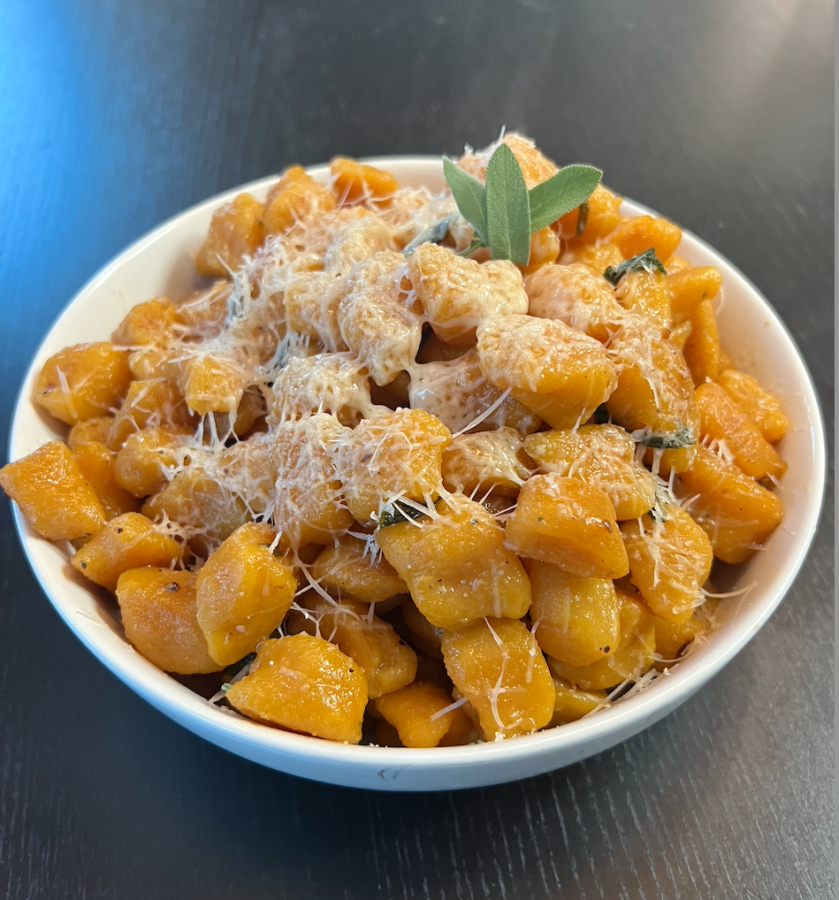

Truffle and Prosciutto Gnocchi
Ingredients
- Head of garlic
- 2 cups of gnocchi
- 6 strips of prosciutto
- 1 cup heavy cream
- 1 tbsp truffle oil
- ¼ cup chopped fresh parsley
- ½ cup freshly grated parmesan cheese
Instructions
- Cut off the top of the garlic head, drizzle with olive oil, wrap in foil, and bake for 45 minutes at 400 degrees.
- Cook gnocchi until al dente while crisping 6 strips of prosciutto in an oiled pan. Remove from pan.
- Once cooked, squeeze garlic into the prosciutto pan and mash into a paste.
- After a few minutes, add 1 cup of heavy cream. Simmer and season to taste.
- Add in the truffle oil, then the cooked gnocchi, crushed prosciutto, chopped parsley, grated parmesan, and a splash of pasta water to the pan.
- Mix and enjoy!